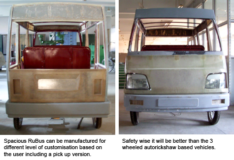

Transportation Design
Self Initiated Design Project
- Socialy Responsive Design
- Semiautomatic Handloom
- IITG-KVIC TBUSemiautomatic Loin Loom
- Vegetable Dye
- Jute Weaving Semiautomatic Hanaloom
- Low Cost Dental Chair
- Transportation Design
Rubus
Ableped
Abroboat
Power tiller
Dipbahan
Dipbahan plus
Dipbahan utlity
Multi-purpose Tricycle
Vending Cart
- Equipment Design
Bamboo Proces
MRMC
- Water
BUK- Packging Drinking water
Iron Removal Filter
- Explorations
RuBus
Automobile happened to be my weakness. With thriving Indian economy and effort for infrastructure development such as roads even in rural areas, need for transport is increasing and cheaper automobiles in Indian context is essential. Many of the Indian automobile majors are trying to design and manufacture cheaper vehicles to met diverse demand.
To meet this requirement, a project to design, develop and prototype a rural transportation vehicle was initiated by self. The prototyping is in advance stage and the vehicle is code named as RuBus.
Features of RuBus:
Most of the aggregates are outsourced from existing common 2/3/4 wheel automobiles to reduce cost, improved maintenance and repairability.
RuBus uses a body on ladder chassis principle and is of open structure with FRP body panels over tubular structure.
It can seat 8 adults comfortably and can be used for carrying goods also after folding the passenger’s seats.
Total input costs will be within Rs. 1.00 lac.

...........
..dasak@iitg.ernet.in
..T: +91-361-2582454
RuBus will not need highly capital intensive factory for manufacturing since all the components will be outsourced from contract manufacturer.
Advanced version of RuBus will be hybrid powered using renewable sources of energy in combination with petroleum based fuel.
For protection against adverse elements of nature, basic RuBus will be fitted with synthetic tarpaulin screens at the sides and roof. However FRP based doors and roof , glass panel sliding windows are options available to the user.